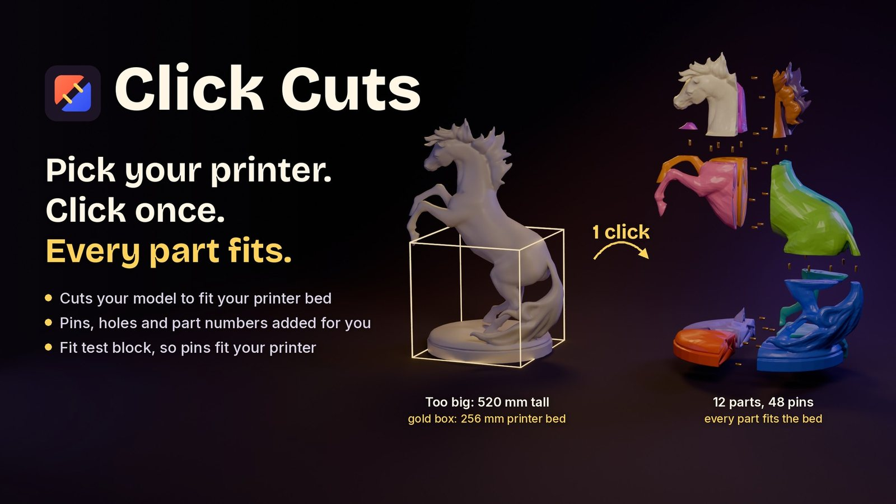
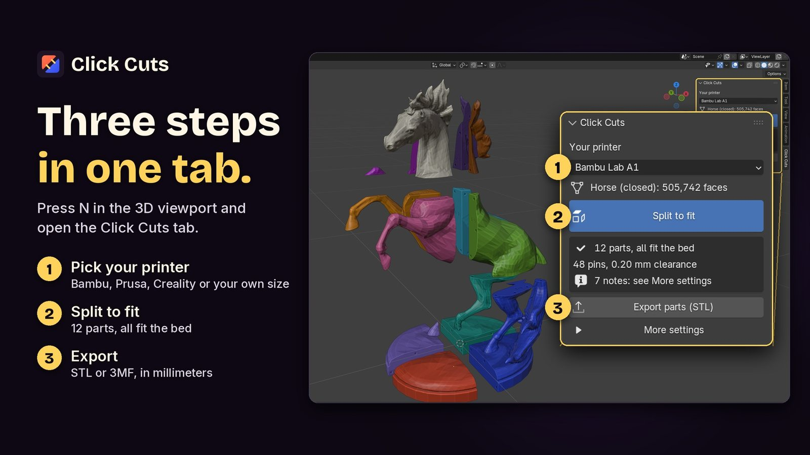
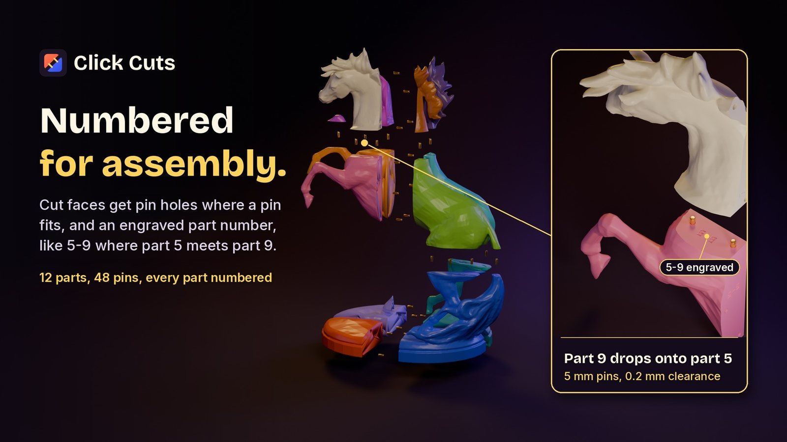
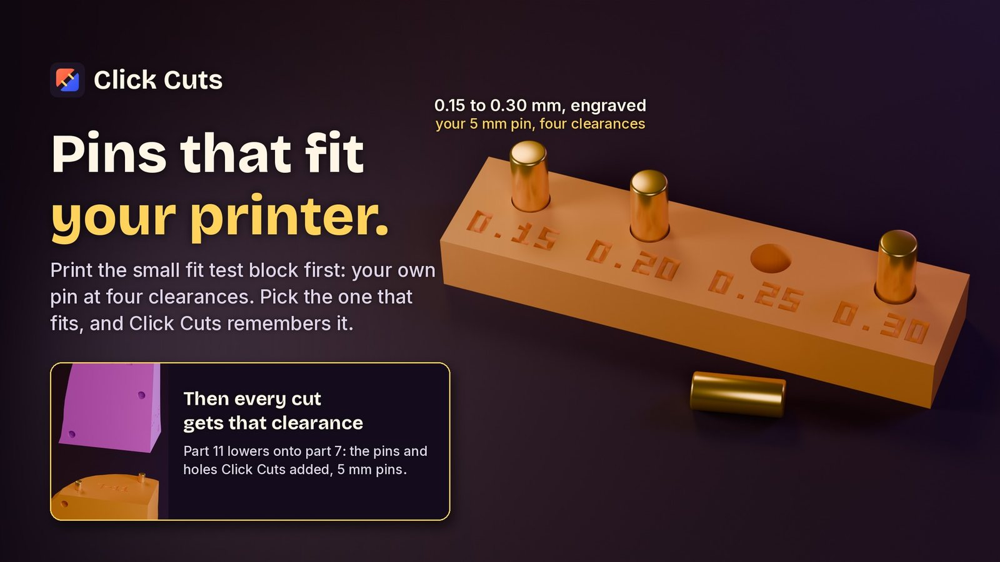
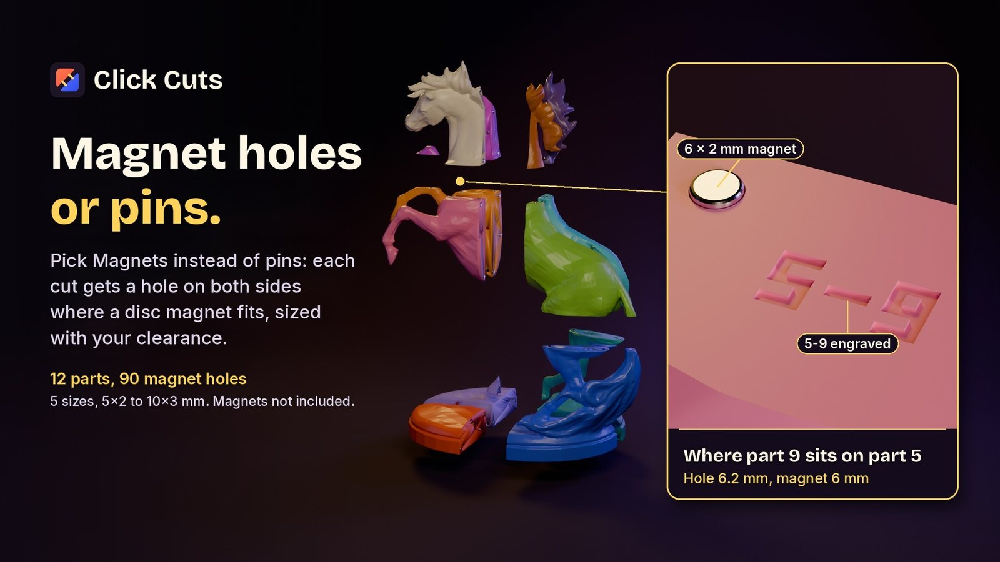

Click Cuts · Pick your printer. Click once. Every part fits.
Click Cuts guide: split models for 3D printing in Blender
Press Split to fit and Click Cuts plans every cut for you, so each part fits your bed, with pins, pin holes and an engraved part number on the cut faces. Each part turns green when it fits, is watertight and has enough wall around its holes, or orange or red with the reason. Print the small fit test block first and you know which clearance fits your printer, so pins are not loose or stuck.

In short
Click Cuts is a Blender add-on that splits a model that is too big for your 3D printer into parts that fit your bed. You pick your printer and click Split to fit: it plans the cuts, adds round pins or holes for disc magnets, engraves a part number on the cut faces and checks every part. A small fit test print tells you which clearance fits your printer. It works in Blender 4.2 or newer. This page is the full guide.
Getting started
Install: open Blender 4.2 or newer. Drag click_cuts-1.0.0.zip into the Blender window and confirm. Do not unzip it. Or go to Edit > Preferences > Get Extensions, open the drop-down menu at the top right, choose Install from Disk and pick the zip. Got a folder instead of a zip? See the FAQ. Updating later? Install the new zip the same way.
Open the panel: in the 3D viewport press N and open the Click Cuts tab.
Your first split
- Under Your printer, pick your printer. Not in the list? Pick Custom size and type your bed size in mm (X, Y, Z).
- Click your model in the viewport. The panel shows its name and face count, for example “Statue: 500 faces”.
- Click Split to fit. Click Cuts plans the cuts, cuts the model into parts that fit your bed, adds pins and pin holes, and engraves a part number on the cut faces. The result box says, for example, “8 parts, all fit the bed” and “12 pins, 0.20 mm clearance”.
- Click Export parts (STL). Every part and the pins are written in millimeters, one file per part: piece_01.stl, piece_02.stl and so on, plus pins_5mm_x12.stl.

Where the files go: into a click_cuts folder next to your .blend file. Save your .blend first, or the files go to a temporary folder. To pick your own folder, open More settings, step 4, Folder.
Your original model is kept: it is hidden, not changed. The parts are in a new collection called Click Cuts pieces. Click Split to fit again and the old parts are replaced. Ctrl+Z undoes a split.
Open model? If the model has holes, Split to fit first makes a watertight copy (the panel then shows the name with “(closed)”). The original stays hidden and unchanged.
Wrong unit? If your model is 1000 times too big or too small (a model made in mm, in a scene in meters), Split to fit stops and tells you. Open More settings, step 2, and click Convert to mm. The model itself does not change.

Print the fit test first
Every printer prints holes a little differently. The fit test tells you which clearance fits yours, so pins are not loose or stuck.
- Open More settings, step 3. In the box Fit test: print this first, pick your Material.
- Click Make fit test. You get a small block with four holes for your own pin, each with its clearance engraved in front of it (with the default 0.20 mm: 0.15, 0.20, 0.25 and 0.30 mm), plus four pins.
- Click Export fit test (STL) and print the block and the pins.
- Push a pin into every hole. Under “Printed? Click the one that fits:”, click the clearance where the pin goes in by hand and does not wobble.
Click Cuts remembers that clearance for this printer and material. Next time you pick the same printer and material, it is used again (“Saved for this printer: 0.20 mm”).
All four too loose or too tight? Set Clearance (mm) a step lower or higher and make a new fit test: the four holes move with it.

Magnets instead of pins
Open More settings, step 3, and switch Joint to Magnets. Pick your magnet size under Magnet (mm): 5x2, 6x2, 6x3, 8x3 or 10x3 mm (diameter x thickness, for disc magnets). Then click Split to fit. Magnets are not included.
Each cut face gets a hole for a magnet on both sides, where it fits. The hole is as deep as the magnet plus 0.3 mm for glue, and has at least 1.2 mm of wall around it. Where a magnet does not fit, there is no hole and the notes tell you to glue that joint or pick a smaller magnet. The result box and step 4 count the magnets you need, for example “16 magnet holes of 6x2 mm (magnets not included)”.
Clearance with magnets: the fit test uses a pin. With Magnets, your clearance goes on the diameter of the hole, half on each side: a 6 mm magnet with 0.20 mm clearance gets a hole of 6.2 mm across.
Gluing the magnets: glue the magnets with matching poles. Glue the first magnet in one part. Then stick the next magnet onto the one already glued, and press it into the other part while they hold together. Now the poles always match.

Choose where it cuts: Free cut
Split to fit cuts along the X, Y and Z axes. Want an extra cut somewhere else, for example an arm at the shoulder?
- After a split, click the part you want to cut.
- Open More settings, step 4, and click Add free cut. A cut plane appears on that part.
- Move it (G), turn it (R) and scale it (S). It only cuts what lies inside its rectangle, on the side its arrow points to.
- Click Cut piece. The part is cut in two, with pins (or magnet holes) and numbers like the other cuts.
Lay parts flat
On by default (More settings, step 4). On export, every part is turned so a cut face lies on the bed, if it still fits your printer. A part with no cut face that fits keeps its own way up. Your parts in the scene do not move; only the files are turned. Pins are already flat.
The panel, step by step
Split to fit does everything below in one click. Open More settings to change it.
1 Printer
Margin (mm), the room kept free on every side of the bed (default 2 mm). The panel shows the usable size.
2 Cuts
Make watertight (a closed copy, with Voxel (mm) for the detail). Plan cuts places the cut planes so every part fits with as few parts as possible. Each cut has its own row, for example Cut X (mm): drag or type to move it, or remove it with the X. Add cut: X, Y or Z adds one. Moved a cut? Click Split to fit again: your moved cuts are kept.
3 Joints and numbers
Joint (Pins or Magnets). For pins: Pin diameter (mm) (default 5), Smaller pins on small faces (down to 3 mm, on by default) and Pin length (mm) (default 12; each hole is half this deep plus 0.3 mm). Clearance (mm) (default 0.20) and the fit test. Min. wall (mm), the least material around every hole (default 1.2). Engrave numbers: the cut faces get their part number and its neighbor, for example 3-5 on part 3 where it meets part 5, with Number depth (mm) (default 0.6). Split cuts again with these settings.
4 Check and export
Every part with its size and a color. Green: it fits the bed, is watertight and has enough wall around its holes. Orange: the wall around a hole is thinner than Min. wall. Red: too big for the bed, not watertight, or less than 0.8 mm of wall; the row says which. Colors: Per piece (every part its own color, pins in gold) or Check. Exploded view shows the parts a little apart, only in the viewport. Free cut. Notes from the last split (for example a joint to glue). STL or 3MF, Lay parts flat, Folder, and Export.
Big models
Models with a million faces or more show a time estimate under Split to fit, and a memory line when they need 8 GB or more. Tested on a 1 million face scan in Blender 5.3: about 40 seconds (2-core test machine). In Blender 4.2 to 4.4 the same scan takes about 3 minutes and needs about twice the memory, so for very big scans use a newer Blender.
FAQ
Which Blender versions does it work with?
4.2 and newer, as an extension. Tested in Blender 4.2 and 5.3 on every change.
How do I install it?
Drag click_cuts-1.0.0.zip into the Blender window and confirm. Do not unzip it. Or go to Edit > Preferences > Get Extensions, open the drop-down menu at the top right, choose Install from Disk and pick the zip. Then press N in the 3D viewport and open the Click Cuts tab.
The install failed or I got a folder instead of a zip. What now?
Safari on a Mac can unzip downloads by itself, and Blender cannot install a folder. Download it again with another browser, such as Chrome or Firefox, and drag the zip into Blender without opening it. Also check your Blender version: click the Blender logo at the top left, then About Blender. Click Cuts needs Blender 4.2 or newer and does not install in older versions. Still stuck? Send a message through the store with your Blender version and a screenshot of the error.
Why not just use my slicer's cut tool?
A slicer cuts one plane at a time, and you set every cut and connector yourself. Click Cuts plans all the cuts so every part fits your bed, checks each part (green fits, orange or red tells you why), numbers the parts, and uses the clearance from your own fit test print.
Which connectors?
Round pins, or holes for disc magnets (5x2, 6x2, 6x3, 8x3 or 10x3 mm; you buy the magnets). The magnet hole gets your clearance on the diameter and 0.3 mm extra depth for glue. No dovetails or snap keys.
How do I glue the magnets?
Glue the magnets with matching poles: stick a magnet to the one already glued before you press it in.
My pins are too loose or too tight. What do I do?
Print the fit test first (More settings, step 3, Make fit test): one small block with your own pin at four clearances. Click the clearance where the pin goes in by hand and does not wobble. Click Cuts remembers it for that printer and material and uses it for every split after that. All four wrong? Set Clearance (mm) a step lower or higher and make a new fit test.
Does the fit test work for magnets?
The fit test uses a pin. With Magnets, the same clearance goes on the diameter of the magnet hole, half on each side: a 6 mm magnet with 0.20 mm clearance gets a hole of 6.2 mm across.
Can I choose where it cuts, so it does not go through a character's face?
Partly. Split to fit cuts along the X, Y and Z axes. After splitting, Free cut adds a cut at any angle through one part, for example an arm at the shoulder, with pins and numbers like the other cuts.
Can I move the cuts?
Yes. Open More settings, step 2: every cut has a row, for example Cut X (mm). Drag or type to move it, or remove it. Then click Split to fit again: your moved cuts are kept.
Do parts lie flat for printing?
Yes. Lay parts flat (on by default) turns every part on export so a flat face, usually a cut face, lies on the bed, if it still fits your printer. Otherwise the part keeps its own way up.
A part is red. What now?
The row in More settings, step 4 says why: too big (pick the right printer, or add a cut), not watertight (try Make watertight with a larger Voxel (mm)), or too little wall around a hole (a smaller pin or magnet, or a higher Min. wall (mm) so holes stay further from the edge). Orange means the wall around a hole is thinner than Min. wall (mm).
Thin or hollow models?
Some joints have no room for a pin or magnet; Click Cuts tells you which ones to glue.
Does it fix broken meshes?
Make watertight makes a closed copy (voxel remesh). Very large or detailed models may need to be cleaned first.
Split to fit says “Wrong unit?”
Your model is 1000 times too big or too small for the scene, usually a model made in mm in a scene in meters. Open More settings, step 2, and click Convert to mm. It sets the scene unit; your model does not change.
Where are my files?
In a click_cuts folder next to your .blend file, one file per part (piece_01.stl and so on) plus the pins, in millimeters. If the .blend is not saved yet, they go to a temporary folder: save first, or pick a Folder in More settings, step 4.
Is my original model changed?
No. It is hidden, not changed, and the parts go into a new collection called Click Cuts pieces. Split again and the old parts are replaced. Ctrl+Z undoes a split.
How fast is it?
Tested on a 1 million face scan in Blender 5.3: about 40 seconds (2-core test machine). In Blender 4.2 to 4.4 the same scan takes about 3 minutes. Big models show a time estimate under Split to fit.
How much memory?
Very large models (3 million faces) need a lot of memory in Blender 4.2 to 4.4: about 9 GB. Blender 5.3 needs about 5 GB. With 8 GB of memory, use Blender 5.3 for models that big.
Does it work with Click Joints Pro?
Yes, side by side. Splitting makes it fit on the bed. Click Joints Pro makes it move.
Can I sell what I print with it?
The Click Cuts license covers the add-on, not your models or prints. What you may do with a model depends on that model's own license.
Something does not work?
Send a message through the store or mail thijs@dortus.com, with your Blender version and, if you can, the model or a screenshot of the panel.
Click Cuts · paid add-on
Get Click Cuts
On Gumroad and on Superhive. You get the zip to install in Blender, and this guide.
- Works on
- Blender 4.2 or newer. Tested in 4.2 and 5.3 on every change
- Exports
- STL or 3MF, in millimeters, one file per part
- Account
- None needed in Blender
- License
- GPL 3.0 or later
Privacy
Click Cuts works offline. It makes no network connections, has no telemetry and needs no account. It writes files only when you press Export, as STL or 3MF, in the folder you choose or next to your .blend file. Your fit test clearance is kept in Blender's own preferences. Your original model is hidden, not changed. Nothing is sent to Dortus.
Support
Made by Thijs at Dortus. Questions or bugs: send a message through the store or mail thijs@dortus.com. Please mention your Blender version and, if you can, send the model or a screenshot of the panel.